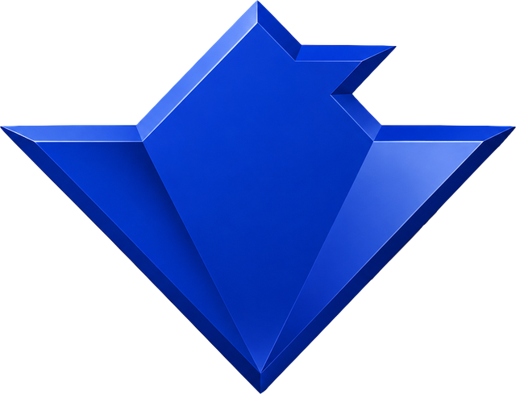

00
JATAYU
AERO
USE CASE
SYSTEM
STATUS
TEAM
EN
/
DE
CONTACT
RESEARCH VENTURE · HOCHSCHULE HOF · BAVARIA
ONE FLIGHT.
FOUR MISSIONS.
PATENT PENDING · DPMA
SCROLL TO FLY

01
02
P·01
P·02
P·03
P·04
03
A·01
A·02
A·03
A·04
A·05
04
1 + N
VTOL
05
06
AK
Amol Vivek Kulkarni
MSc Computational Mechanics · Universität Stuttgart
UK
Utkarsh Prashant Kulkarni
MSc Chemical & Energy Engineering · OVGU Magdeburg